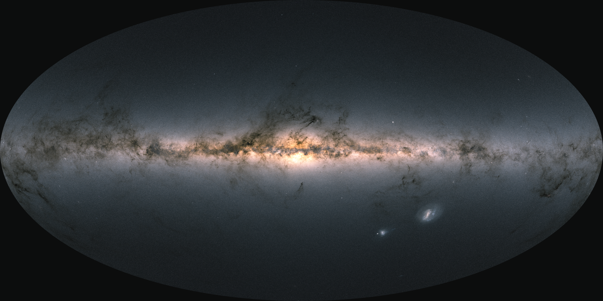

Star counts are the systematic tallying of stars in a region of sky as a function of apparent magnitude, used to infer the three-dimensional structure of the Milky Way from two-dimensional images. By counting how many stars appear in each magnitude interval across different directions, astronomers can work out how stellar density changes with distance and direction, without needing a spectrum for every individual star.

ESA/Gaia/DPAC; CC BY-SA 3.0 IGO. Acknowledgement: A. Moitinho
The technique depends on three ingredients: the spatial density of stars along a given line of sight, the luminosity function (how many stars exist at each intrinsic brightness), and the amount of dust extinction along the way. Comparing counts toward the galactic plane with counts toward the poles directly reveals the flattened geometry of the disk.
Historical Development
William Herschel pioneered star counts in 1785, tallying stars in roughly 683 sky directions with his 20-foot reflector. He assumed all stars had the same intrinsic brightness and produced the first quantitative map of the Milky Way, a flat, irregular slab with the Sun near its centre. His estimate of about 12,000 light-years across was far too small, because unrecognised dust blocked the view beyond a few thousand light-years.
In the early 1900s, Jacobus Kapteyn organised the Selected Areas programme, collecting photographic plates of 206 sky zones from observatories worldwide. Using mathematical inversion methods developed with Karl Schwarzschild, Kapteyn published his "Kapteyn Universe" in 1922: a lens-shaped galaxy about 40,000 light-years across, still too small for the same reason. Only in 1930 did Robert Trumpler prove that interstellar dust absorbs starlight significantly, explaining why every earlier star-count map was compressed.
In 1980, John Bahcall and Raymond Soneira built a parametric galactic model that combined an exponential disk with a spheroidal halo to predict star counts in any direction. This model dominated galactic structure work for two decades and helped confirm the existence of the thick disk, which showed up as an excess of stars at intermediate galactic latitudes above what a thin-disk model predicted.
Biases
Star counts suffer from several well-known biases. Malmquist bias, first described by Gunnar Malmquist in the 1920s, means that magnitude-limited surveys preferentially detect rare, luminous stars while missing the far more common faint red dwarfs at all but the nearest distances. Interstellar extinction makes stars appear fainter and fewer than they are, and varies strongly with direction. Correcting for these effects requires a model of the dust distribution and an accurate luminosity function.
Modern Surveys
Near-infrared surveys such as 2MASS (1997-2001) opened the dust-choked galactic plane to deep star counts, since infrared light passes through dust far more easily than optical light. ESA's Gaia mission has catalogued over 1.8 billion stars with positions, parallaxes, and photometry, roughly 1-2% of the Milky Way's estimated 100-400 billion stars. Gaia transforms the old statistical approach into direct three-dimensional mapping for an historically unprecedented sample.